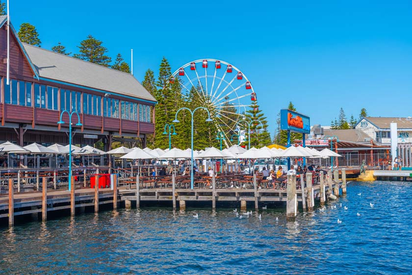
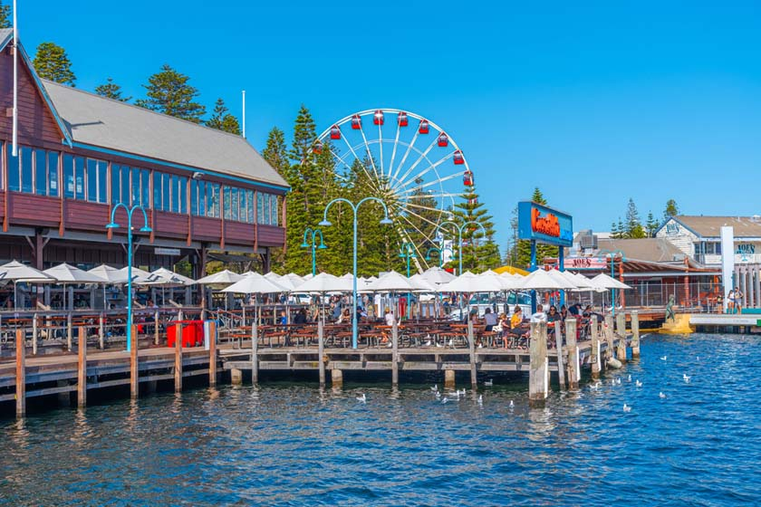
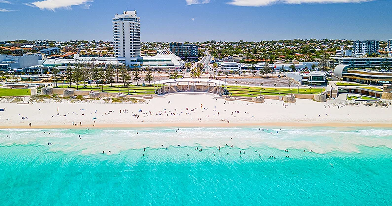

Perth, Australië
.svg)
Perth is de hoofdstad van Western Australia en met ongeveer 1,5 miljoen inwoners de grootste stad in deze regio. Het staat bekend als de meest afgelegen grote stad ter wereld; de dichtstbijzijnde grote stad, Adelaide, ligt op ongeveer 2.700 kilometer afstand. Ondanks deze geïsoleerde ligging biedt Perth een levendige stedelijke ervaring met prachtige stranden, een ontspannen sfeer en diverse culturele bezienswaardigheden.
Bezienswaardigheden
-
Kings Park en Botanische Tuin:
.jpeg) Een van de grootste stadsparken ter wereld, met wandelpaden, tuinen en een panoramisch uitzicht op de skyline van Perth en de Swan River.
Fremantle: Een historische havenstad met goed bewaarde koloniale architectuur, levendige markten en een rijke maritieme geschiedenis.
Rottnest Island:
Een van de grootste stadsparken ter wereld, met wandelpaden, tuinen en een panoramisch uitzicht op de skyline van Perth en de Swan River.
Fremantle: Een historische havenstad met goed bewaarde koloniale architectuur, levendige markten en een rijke maritieme geschiedenis.
Rottnest Island:.jpeg) Een eiland voor de kust van Perth, bekend om zijn prachtige stranden, snorkelmogelijkheden en de inheemse quokka's, kleine buideldieren die vaak glimlachend op foto's staan.
Scarborough Beach:
Een eiland voor de kust van Perth, bekend om zijn prachtige stranden, snorkelmogelijkheden en de inheemse quokka's, kleine buideldieren die vaak glimlachend op foto's staan.
Scarborough Beach: Een populair strand voor zowel zwemmen als surfen, met een levendige boulevard vol cafés en restaurants.
Swan Valley:
Een populair strand voor zowel zwemmen als surfen, met een levendige boulevard vol cafés en restaurants.
Swan Valley:.jpeg) Een wijnregio net buiten Perth, ideaal voor wijnproeverijen en culinaire ervaringen.
Een wijnregio net buiten Perth, ideaal voor wijnproeverijen en culinaire ervaringen.
Activiteiten
- Surfen: De stranden van Perth, zoals Trigg Beach en Scarborough Beach, zijn ideaal voor zowel beginnende als ervaren surfers.
- Fietsen op Rottnest Island: Huur een fiets en verken het autovrije eiland, genietend van de natuur en het spotten van quokka's.
- Wijnproeverijen: Bezoek de wijngaarden in de Swan Valley en proef lokale wijnen en delicatessen.
- Markten bezoeken: De Fremantle Markets bieden een scala aan lokale producten, ambachten en live muziek, en zijn elk weekend geopend.